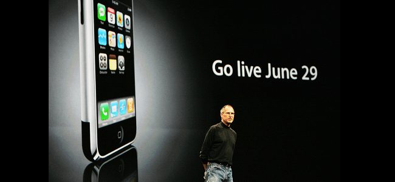
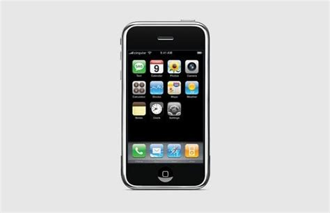
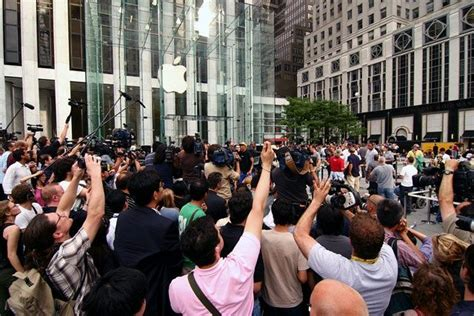

The first iPhone launch took place on June 29, 2007, marking a historic moment in the evolution of mobile technology. Apple's co-founder and then-CEO, Steve Jobs, introduced the original iPhone during a keynote address, unveiling a device that combined a phone, iPod, and internet communication device in a revolutionary way.
A groundbreaking feature of the first iPhone was its touchscreen interface. Unlike traditional smartphones with physical keyboards, the iPhone's multi-touch display allowed users to interact with the device using gestures such as tapping, swiping, and pinching. This intuitive interface set a new standard for user-friendly interaction. The first iPhone introduced the Safari web browser for mobile devices, providing users with a desktop-like internet browsing experience on their phones. This marked a significant departure from the limited and often clunky mobile browsers of the time, showcasing Apple's commitment to delivering a comprehensive user experience." The iPhone seamlessly integrated iPod functionality, allowing users to carry their music libraries in their pockets. This convergence of a high-quality music player with a phone and internet device was a major selling point, appealing to music enthusiasts and simplifying the number of devices users needed to carry. The original iPhone featured a 2-megapixel camera, a notable inclusion at the time. While modest by today's standards, it marked the beginning of the smartphone camera's evolution, eventually leading to the high-quality cameras found in modern smartphones.
The first iPhone was initially exclusive to the AT&T network in the United States, a strategic move by Apple to secure a strong partner for the device's launch. This exclusivity, however, later became a point of contention among consumers who desired greater flexibility in choosing their mobile carrier.
Surprisingly, the first iPhone did not have an App Store at launch. Initially, third-party app development was limited, and users were restricted to the pre-installed applications. The App Store, which played a pivotal role in the iPhone's success, was introduced with the iPhone 3G in 2008.y.
The first iPhone's launch not only transformed the smartphone industry but also had a profound cultural impact. It set the stage for the widespread adoption of smartphones, changing how people communicate, access information, and consume media. The iPhone's sleek design and innovative features influenced the direction of mobile technology for years to come.
